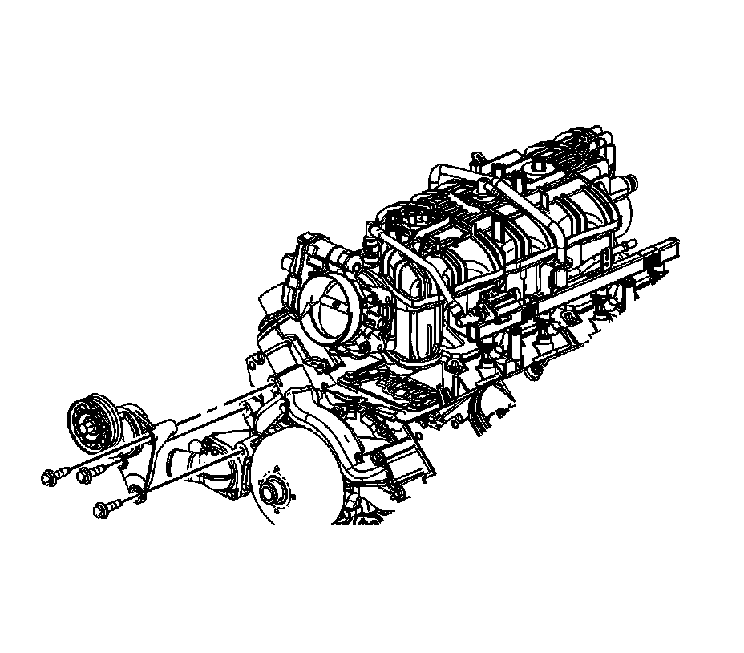

Drive Belt Tensioner Replacement - Accessory
Drive Belt Tensioner Replacement - Accessory
Removal Procedure

1. Remove the accessory drive belt.
2. Remove the drive belt tensioner bolts.
3. Remove the drive belt tensioner.
Installation Procedure
1. Position the drive belt tensioner to the water pump.
Notice: Refer to Fastener Notice.
2. Install and tighten the drive belt tensioner bolts.
Tighten the bolts to 50 N.m (37 lb ft).
3. Install the accessory drive belt.